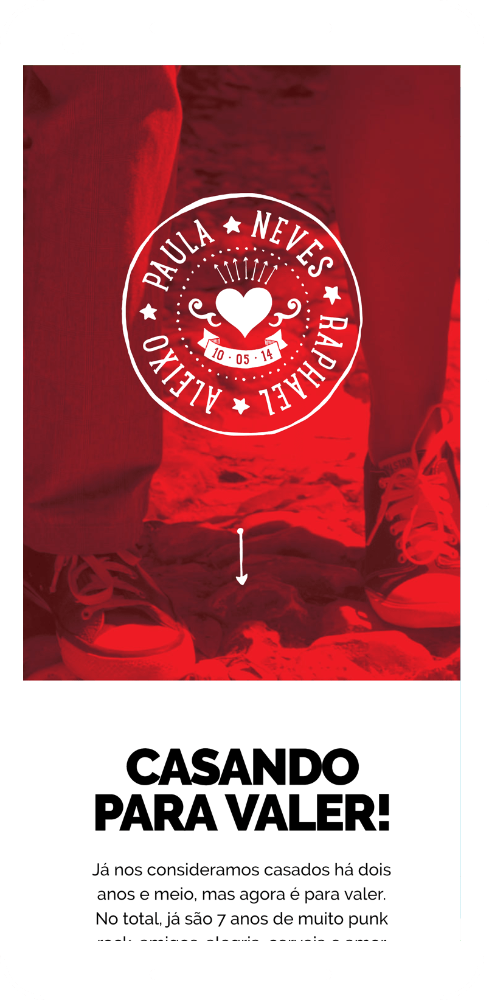
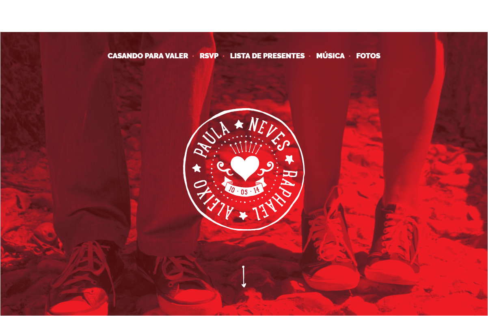
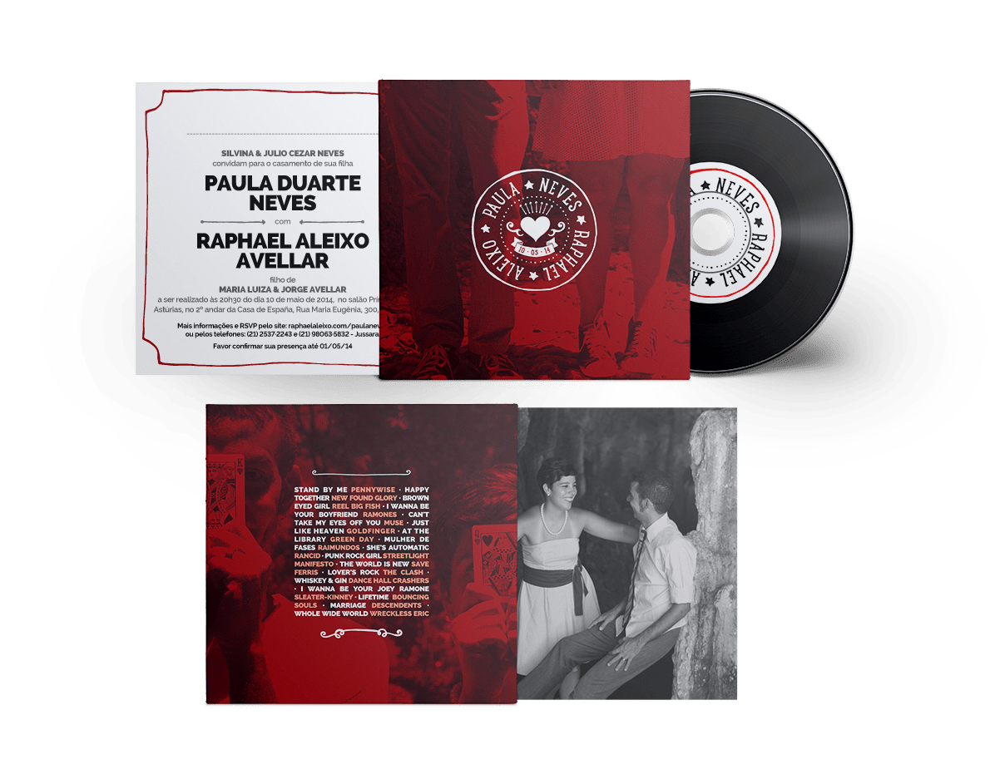

<div class="modal__wrapper">
<div class="modal__scroller">
<div class="modal__header">
<h2 class="modal__title">Paula Neves 💕 Raphael Aleixo</h2>
<h3 class="modal__tags">
<span class="modal__tag">UX/UI</span>
<span class="modal__tag">Branding</span>
<span class="modal__tag">Front End</span>
</h3>
</div>
<div class="modal__content">
<div class="modal__editable">
<p>
We didn't want our wedding to look as most other weddings do. We decided to do it ourselves, in true punk rock fashion, all the graphic materials. I made the website for our guests to RSVP and our formal invitation was a real burned CD with a bunch of punk rock songs that were important to us. I also scaled the wedding's "brand" into a large sticker, to be applied on the dance floor and made flip flops simulating converse sneakers, as wedding favors for the guests (flip flops are common wedding favors in Brazilian weddings and highly anticipated by guests after a long night of dancing).
</p>
<figure class="modal__image--full">

</figure>
<figure class="modal__image--small">

</figure>
<figure class="modal__image--full">

</figure>
<figure class="modal__image--full">

</figure>
</div>
</div>
</div>
</div>
